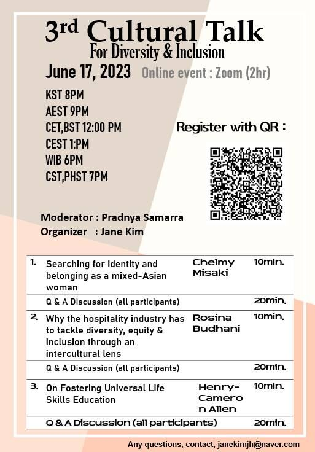
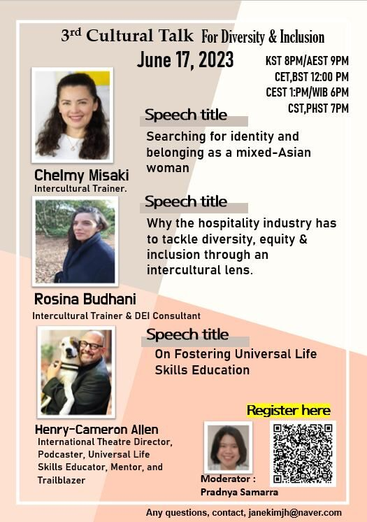

3th Cultural Talk For Diversity
Theme: Identity, Belonging & Universal Life Skills

Event Details
Date: 17 June, 2023
Time: 20:00 (KST) / 21:00 (AEST) / 12:00 (CET / BST) / 13:00 (CEST) / 18:00 (WIB) / 19:00 (CST / PHST)
This event has already taken place and is now part of our archive.
Conference Overview
This session brought together speakers working at the intersections of identity, hospitality, and education. Across very different stories, a common thread emerged: how people build belonging, navigate difference, and develop the human capacities needed to thrive across cultures.
Program Notes
This archive entry was rebuilt from poster materials. Where individual speaker profiles were not preserved as separate images, the page keeps the surviving event poster(s) and summarizes the session based on the available record.
Archived Poster

Integrated speaker poster featuring Chelmy Misaki, Rosina Budhani, and Henry-Cameron Allen.